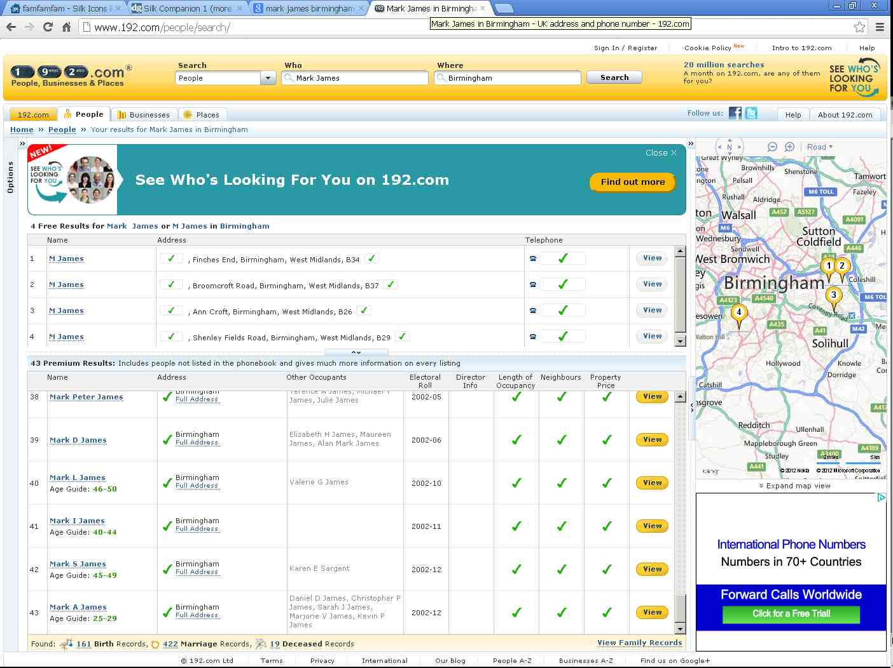

20121027¶
Who is Mark James?¶
I tried to say thanks to Mark James, the author of the Silk Icons... but the email address mjames@gmail.com no longer exists. And oops, according to 192.com there are about 43 people named Mark James in Birmingham:
Jan Olsen obviously had similar problems, already back in 2009, before starting the Silk Icons Evolved project.
When updating my /about/thanks page I noticed that Lino
included a file
pyuca_allkeys.txt,
an unmodified copy of the original file.
And although I understand their
Terms of Use
as giving me the right to do this,
I have become more careful after my collision with
Klaus Lüchtefeld from Köln.
This file presents an unnecessary risk of me having misinterpreted
their copyright notice.
So I removed the file and added a warning
in lino.modlib.vocbook.base.
Homework Schools¶
Continued on lino.apps.homeworkschool.
One change in lino.modlib.cal.models:
RecurrenceSet no longer is a ProjectRelated.
Because homeworkschool will maybe have school.Course as project_model.
There is now a default text in lino.Lino.get_main_html().

{kind=link}